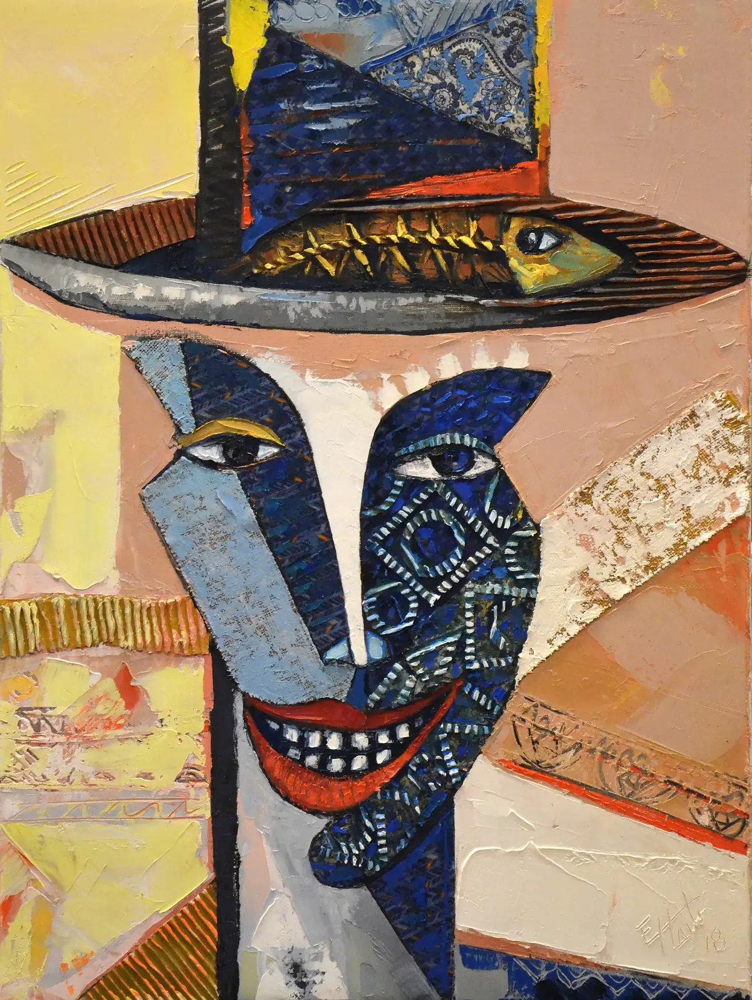
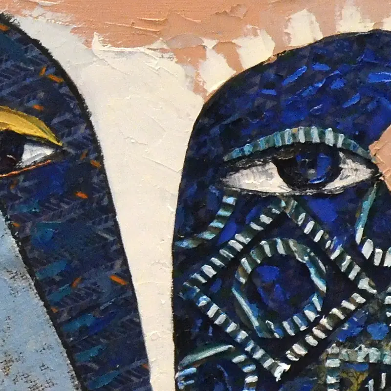

Beneath the Surface
- Técnica
- Pintura
Beneath the Surface: un cuadro del pintor cubano-noruego Ramón Eduardo Haití Filiu.
Consultar esta obra
Beneath the Surface: un cuadro del pintor cubano-noruego Ramón Eduardo Haití Filiu.
Consultar esta obraDetalleRecorte de 800 píxeles de la fotografía original, a resolución completa.
